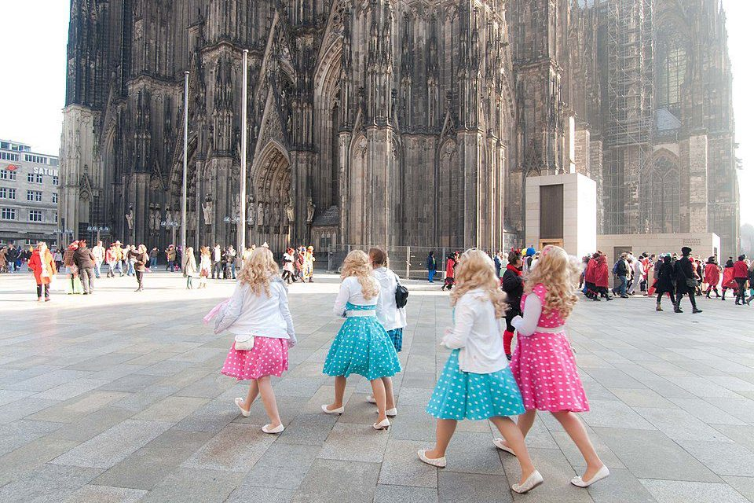

Las costumbres de los Alemanes
Los alemanes tienen costumbres como cada pais del mundo, estas costumbres que vamos a ver ahora pueden ser conocidas o no.
Saludarse con un apretón de manos.
En Alemania se da la mano a modo de saludo, un saludo que se reparte entre amistades y gente que no se conoce por igual. Cero complicaciones. A quienes provienen de Latinoamerica y los países del sur de Europa, este saludo nos resulta algo frío, pero al final te acabas acostumbrando e incluso se agradece. Sobre todo después de la pandemia.

Brindar mirándose a los ojos
Una de las costumbres y tradiciones de Alemania más comunes es brindar mirándose directamente a los ojos. Cuando se brinda, además de decir Prost! o Zum Wohl!, es obligatorio hacer contacto visual directo con cada persona con la que se brinda, y ¡hay que chocar vasos con todo el mundo! Si no se hace se corre el riesgo no solamente de quedar como una persona grosera, si no que caerá sobre el que no brinda correctamente la «maldición de siete años de mal sexo».
Golosinas para el primer día de cole
Cuando empiezan por primera vez el colegio, en su primer día, a las niñas y niños alemanes se les regala una Schultüte, un gran cono de cartón relleno de golosinas. De esta manera se les hace más dulce el trago el paso a la escuela. Además de darles el Schultüte, celebran además una fiesta en la que está invitada toda la familia y amistades, y el cono (¡que puede llegar a costar mucho dinero!) lo guardarán durante años como recuerdo de ese día.
Nudismo o Freikoerperkultur (FKK)
Hay que olvidarse de las salchichas y la cerveza, el signo de la verdadera identidad alemana es disfrutar como dios les trajo al mundo sin que importe un comino. En Alemania el nudismo es una práctica común y extendida y se conoce como Freikoerperkultur (FKK). Entre grandes y peques no hay pudor en desnudarse delante de otras personas en vestuarios, saunas, piscinas, playas, lagos o incluso parques.
¡Zapatos fuera!
Otra de las costumbres y tradiciones de Alemania más extendidas: quitarse los zapatos al entrar en una vivienda. De esta manera se mantiene el interior de la casa más limpia. Ya sea tu propia casa, si estás de visita o si solo vas a entrar un momentito, es costumbre descalzarse y a veces incluso se dejan los zapatos por fuera de la puerta de entrada. Si hay una fiesta, encontrarás una montaña de zapatos al entrar; son los de todas las personas invitadas. Las niñas y niños cuando llegan a las guarderías también se quitan los zapatos y andan dentro con calcetines o Hausschuhe (zapatillas de estar por casa).

¿Plástico, papel o vidrio?
En Alemania se separa la basura hasta niveles insospechados. Las viviendas tiene al menos cuatro cubos diferentes para cada tipo de desperdicio, y todo se separa meticulosamente. Además, también tienen un lugar donde ir almacenando las botellas y latas de bebidas, que no son consideradas basura, ya que cuestan dinero. Ese dinero se consigue una vez se devuelven en los puntos de recogida llamados Pfand Station. Es una de las costumbres alemanas que más nos gustan.
Algunas fiestas y tradiciones alemanas
Oktoberfest
El Oktoberfest es de las fiestas más tradicionales y famosas de toda Alemania. Originaria de la ciudad de Múnich, se celebra cada año entre los meses de septiembre y octubre. Consiste en vestir los trajes tradicionales bávaros, comer comida típica alemana, como sus famosas variedades de salchichas (desde las típicas Weißwurst hasta las Bratwurst, pasando por las Frankfurter Wurst, las internacionalmente conocidas salchichas Frankfurt) y por supuesto beber la mayor cantidad de cerveza posible. Esta fiesta es tan popular que ha acabado extendiéndose por toda Alemania e incluso a ciudades de otros países.
Frohe Ostern!
La Semana Santa en Alemania tiene notables diferencias con la de los países de habla hispana, ya que mezcla tradiciones del cristianismo con las del antiguo paganismo germánico. Aquí se celebra la Pascua, que se llama Ostern y, al igual que en el resto de países cristianos, transcurre desde el Jueves Santo (Gründonnerstag, Jueves Verde) hasta el Domingo de Resurrección (Ostersonntag, Domingo de Pascua). Una de las diferencias es que aquí no hay procesiones, ni muchas representaciones religiosas. En Alemania se vive la Pascua de una manera más parecida a la Navidad, en cuanto a que se decoran las casas con flores, huevos y conejitos, se montan mercadillos (Osternmarkt), se prenden hogueras, se hacen regalos y juegos infantiles. La actividad más esperada sucede durante el Domingo de Pascua. Ese día es cuando llega el Conejo de Pascua (Osternhase) y esconde huevos en los jardines y parques para que niñas y niños los encuentren.
Christi Himmelfahrt, Día del Hombre
La fiesta religiosa que en origen conmemora la ascensión de Cristo a los cielos (Christi Himmelfahrt) ha derivado en la fiesta del Día del Padre (Vatertag) y Día del Hombre (Herrentag). Cae en mayo y siempre en jueves y es tradición en la mayoría de ciudades de Alemania que se junten los amigos (solo hombres, sean padres o no) a festejar, hacer caminatas y sobre todo beber y hacer el ganso. Muchos se disfrazan, como en una despedida de soltero, y van arrastrando allá por donde vayan un carrito lleno de bebidas. Es uno de los días del año en qué más incidentes relacionados con el alcohol hay en toda Alemania.
Martinstag o Laternenfest, fiesta de las linternas
El día de San Martín de Tours (Martinstag) es tradición que las niñas y niños pequeños en los colegios y guarderías confeccionen unos farolillos o linternas de papel y luego salgan a las calles como en pequeñas procesiones. Los grupos en algunos lugares van encabezados por un adulto disfrazado de soldado romano de capa roja montado a caballo, que representa a San Martín. Al final del paseo en muchas ciudades se termina también con una fogata. Es una de las costumbres y tradiciones de Alemania más bonitas y se celebra siempre alrededor de esa fecha, 11 de noviembre, cuando anochece temprano y se ven mejor las luces de los farolillos.
Fasching, el carnaval en Alemania
Karneval, Fastnacht, Fasching. Estas tres palabras alemanas pueden causar confusión pero se refieren a la misma celebración: el carnaval en Alemania. En Renania del Norte-Westfalia se le llama Karneval. En Renania-Palatinado, Hesse y Baden-Württemberg, Fastnacht, y en Baviera y Sajonia el carnaval es conocido con el nombre de Fasching. En otras regiones también es posible que se llame Fasnet, Fastabend, Fastelovend o Fasteleeraber y aunque cada lugar lo celebra a su manera, su origen es el mismo. El Carnaval de la ciudad de Colonia se remonta a la Edad Media y es una de las mayores y más famosas fiestas de carnaval del mundo y la más popular de todo el país. Aunque el carnaval en Alemania tiene lugar durante el mes de febrero (la fecha depende del Miércoles de Ceniza) en Colonia el carnaval da comienzo el 11.11 a las 11:11 horas de la mañana con una gran fiesta que se celebra en sus calles con gran jolgorio y la gente disfrazada. Esta celebración en Alemania es tan importante, que también se la conoce como la “quinta estación”, ya que tiene lugar cuando el invierno está a punto de terminar.
Resumen/Opinion del autor
Alemania es un pais con mucha variedad y cultura.. no se si tan exotica como la cultura aciatica como china pero es un pais rico en historia. Antes de hablar mal de un pais hay que investigar o visitarlo ya que los medios pueden ser controlados y manipulados para el beneficio propio o demas, ocultando la realidad del mismo.